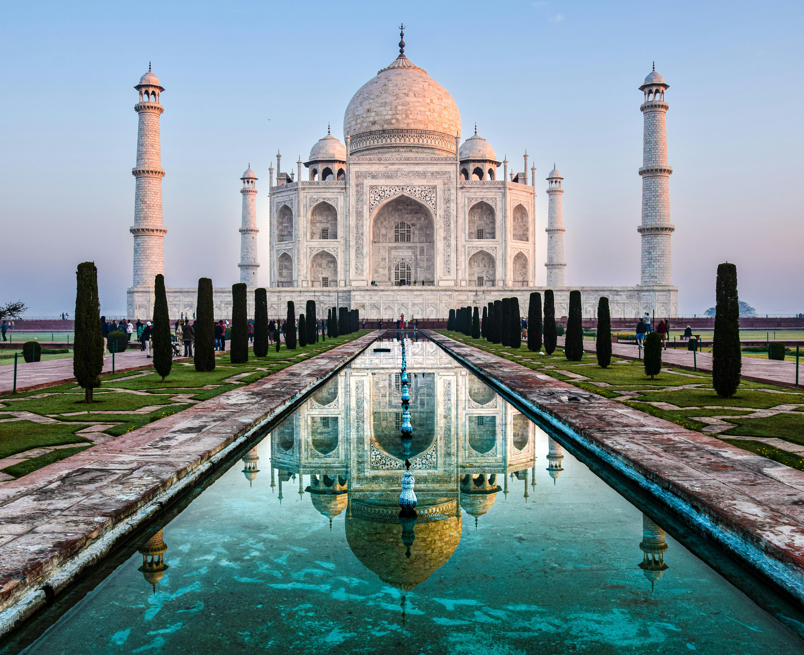
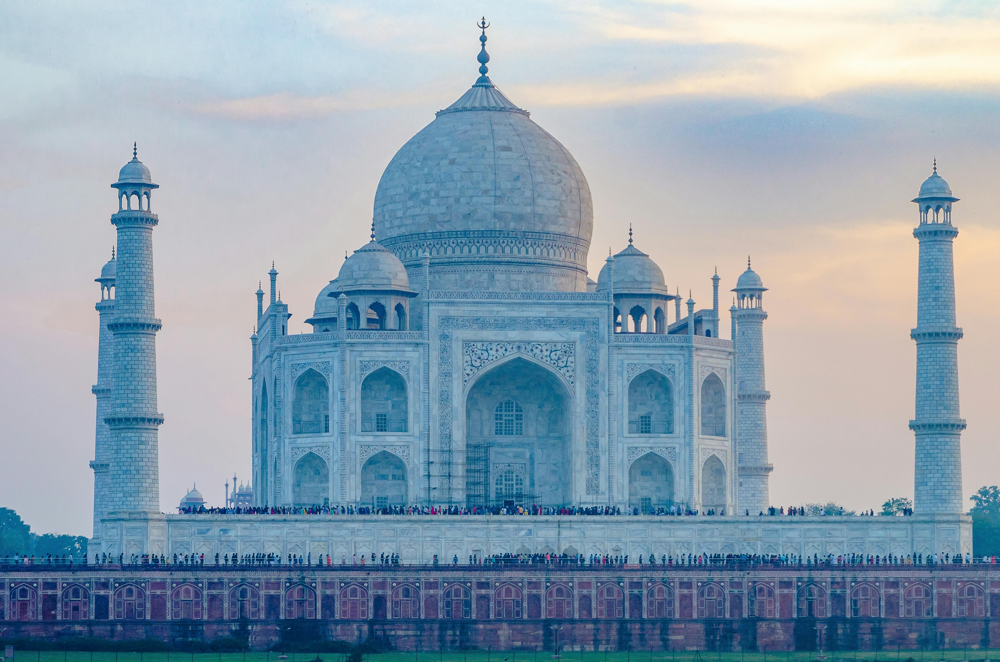

The History of the Taj MahalThe Taj Mahal was commissioned in 1632 by Mughal Emperor Shah Jahan in memory of his beloved wife, Mumtaz Mahal. It is a UNESCO World Heritage Site and is considered one of the finest examples of Mughal architecture, blending elements from Islamic, Persian, Ottoman Turkish, and Indian styles. |
 |
Construction
3. The construction of the Taj Mahal took about 22 years, with an estimated completion date around 1653. It is said that over 20,000 artisans, craftsmen, and laborers worked on the project. The complex includes not just the mausoleum but also a beautifully landscaped garden, a reflecting pool, and several other buildings.
Architectural FeaturesThe Taj Mahal is renowned for its stunning white marble façade, intricate carvings, and beautiful gardens. The main dome rises to 35 meters and is surrounded by four smaller domes. The gardens represent paradise and are designed in a symmetrical layout, reflecting the beauty of the monument. |
 |
Cultural Significance
6. Today, the Taj Mahal attracts millions of visitors each year and is considered one of the Seven Wonders of the World. It stands as a testament to Mughal architecture and is a significant part of India's cultural heritage. .
Visiting the Taj MahalLocated in Agra, India, the Taj Mahal attracts millions of visitors each year. It is best visited at sunrise or sunset when the light creates a magical effect on the marble. Visitors can explore thegardens, the reflecting pool, and the interior tombs. |
 |